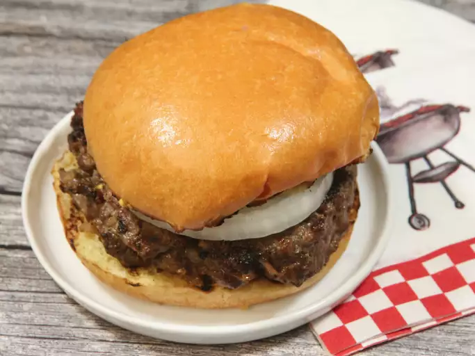

Best Hamburger Ever

Description
The best burger recipe for summertime grilling!
This juicy burger is jam-packed with all kinds
of stuff and has no tasteless bread crumbs.
Serve on buns with your favorite condiments.
This hamburger recipe is flavorful, juicy, and incredibly satisfying.
Ingredients
- 1 1/2 pounds lean ground beef
- 1/2 onion, finely chopped
- 1/2 cup shredded Colby Jack or Cheddar Cheese
- 1 egg
- 1 packet dry onion soup mix
- 1 clove garlic
- 1 tablespoon garlic powder
- 1 teaspoon soy sauce
- 1 teaspoon Worcestershire sauce
- 1 teaspoon dried parsley
- 1 teaspoon dried basil
- 1 teaspoon dried oregano
- 1/2 teaspoon crushed dried rosemary
- salt and pepper, to taste
Steps
- Preheat an outdoor grill for high heat
and lightly oil the grate.
- Meanwhile, combine ground beef, onion, cheese,
egg, onion soup mix, minced garlic, garlic powder,
soy sauce, Worcestershire sauce, parsley, basil, oregano,
rosemary, salt, and pepper in a large bowl.
Use your hands to form the mixture into 4 patties.
- Cook patties on the preheated grill until no longer
pink in the center and the juices run clear, about
4 to 5 minutes per side. An instant-read thermometer
inserted into the center should read at least 165 degrees F (74 degrees C).